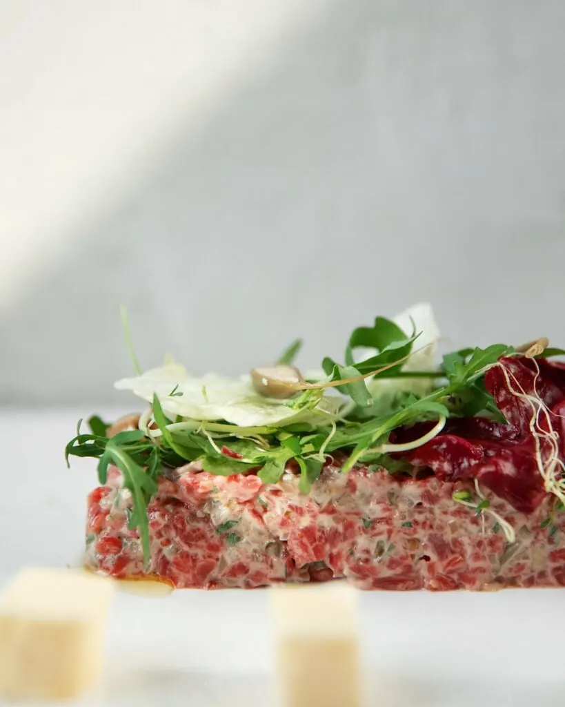
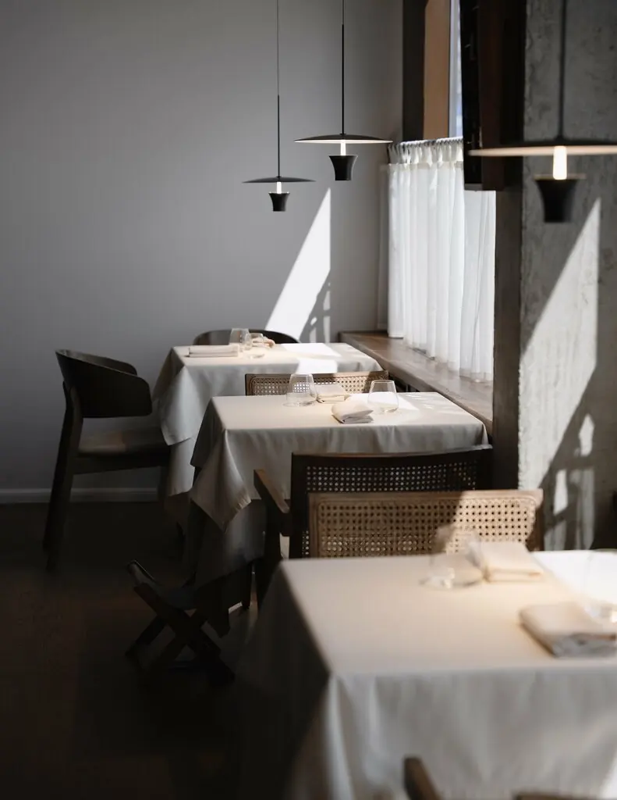
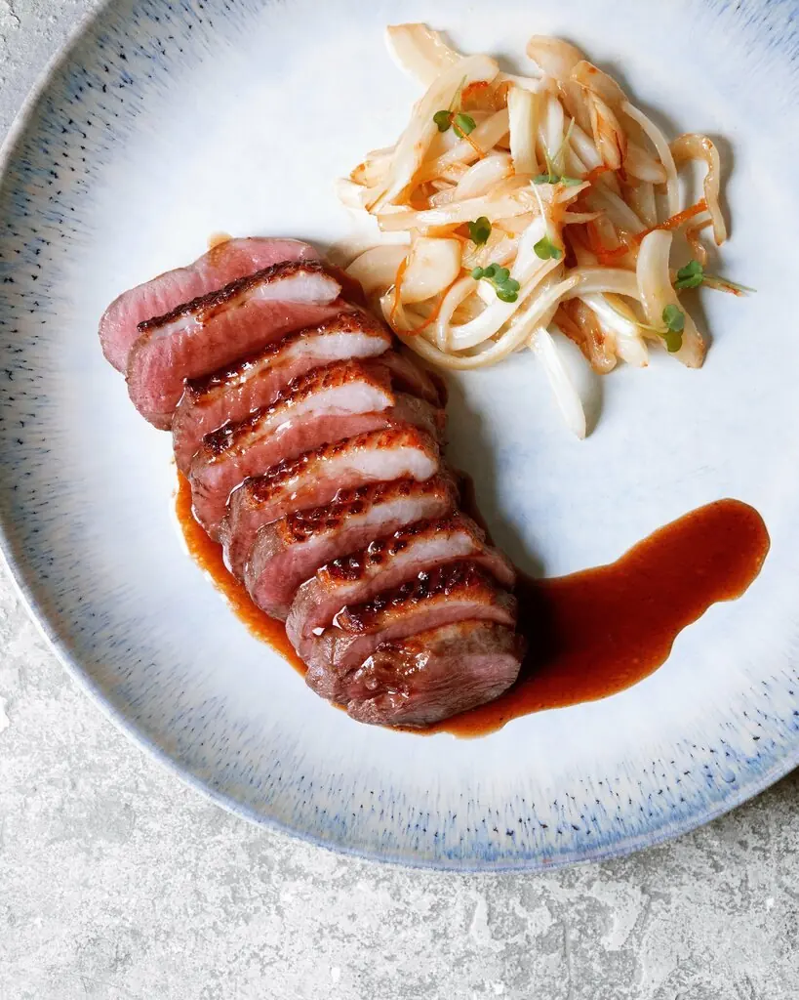
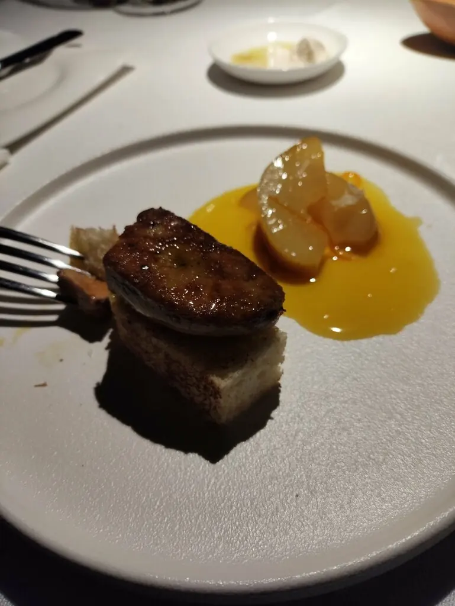

Тартар из гребешка
1 290 ₽ · или из лосося, утки, мраморной говядины. Гости заказывают одно и то же годами.
Улитка на логотипе не случайна. Здесь никто не торопится: ни кухня, ни сомелье, ни вы.


1 290 ₽ · или из лосося, утки, мраморной говядины. Гости заказывают одно и то же годами.

970 ₽ · а рядом гравлакс с медово-горчичным соусом за 1 480 ₽.

830 ₽ · к ней сомелье подберёт вино. На выходе могут ещё и порадовать подарком.
Часть меню с Яндекс Карт и 2ГИС, цены уточняйте у официанта.
Это прям ресторан в классическом понимании и не пытается играть форматами.KS
Всё было очень вкусно. Обслуживание замечательное, официант и сомелье были очень вежливыми.Дарий
Каждый раз посещая Скопин, я заказываю одно и то же, и каждый раз просто волшебно!Екатерина Лугуманова